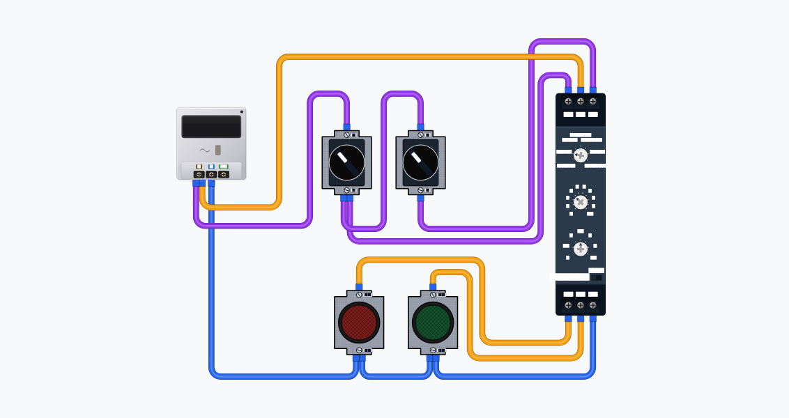
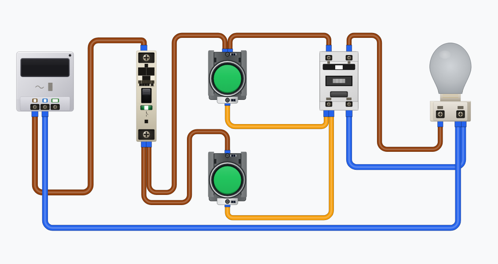
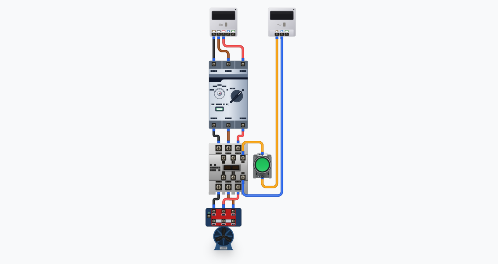
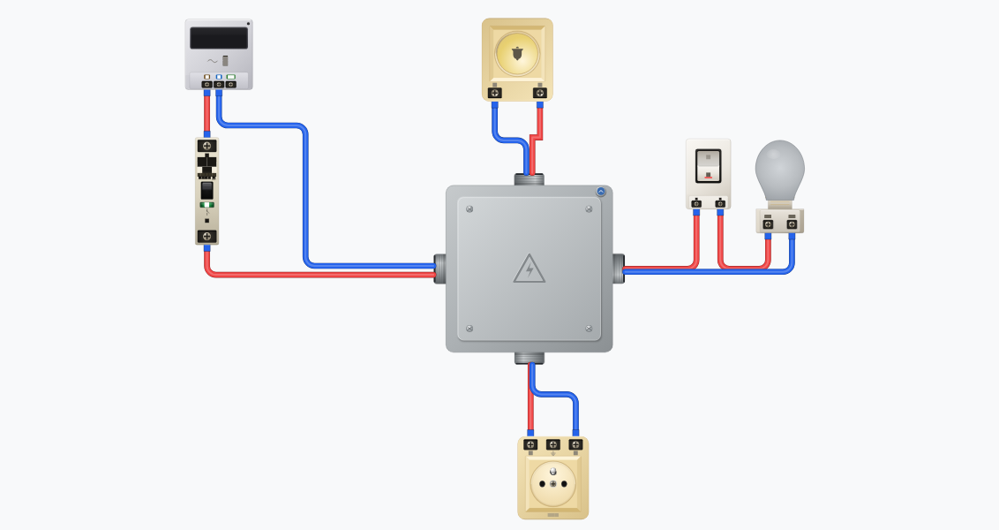
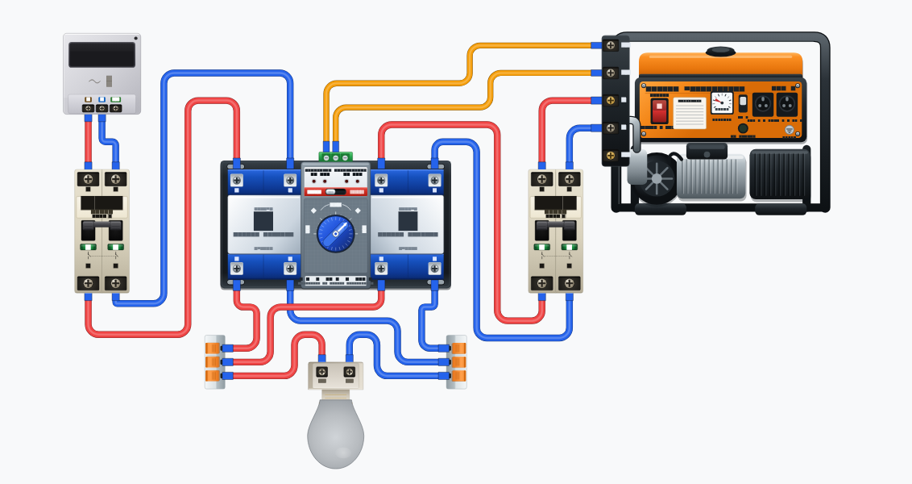
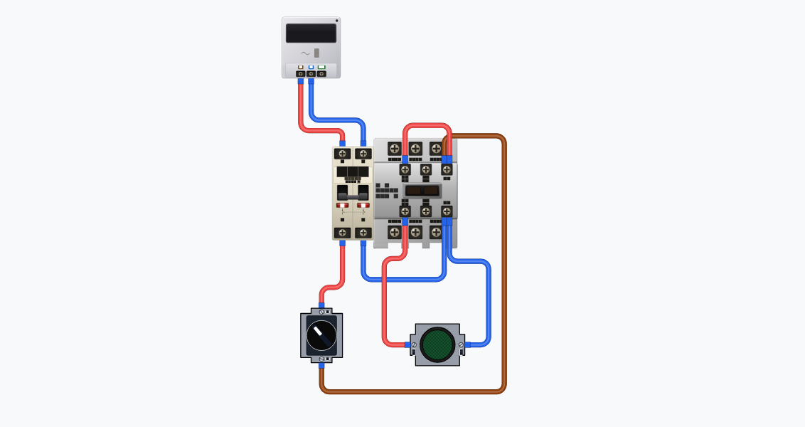
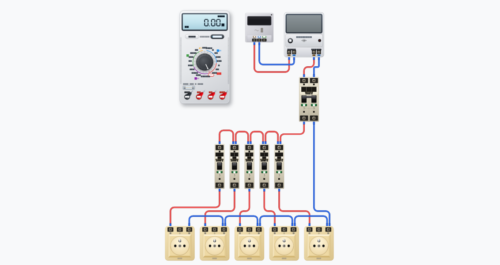
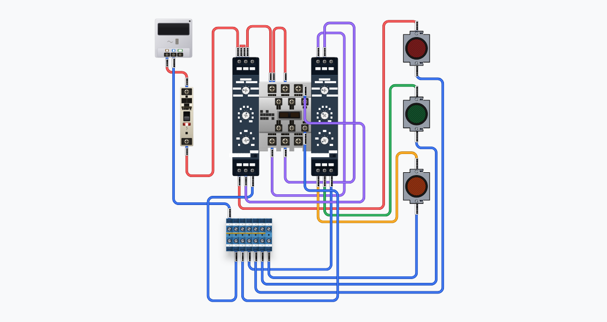

Concevez, câblez, simulez et dépannez des installations électriques réalistes directement dans votre navigateur. Transformez un schéma en une installation virtuelle interactive afin de vous préparer aux conditions réelles du métier avec un accompagnement intelligent alimenté par l'IA.
Compatible Chromebook, ordinateur de bureau et tablette. Aucune installation requise.
Comment ça marche
Créez votre circuit en plaçant des composants réalistes sur l'espace de travail, puis réalisez le câblage comme vous le feriez sur une véritable installation.
Travaillez avec des composants fidèlement modélisés pour retrouver les mêmes repères que sur le matériel réel.
Reliez facilement les composants grâce à une interface pensée pour reproduire les gestes du terrain.
Besoin d'aide ? L'IA peut vous guider dans le câblage, expliquer vos choix ou répondre à vos questions pendant la conception.
Lancez la simulation et observez instantanément le comportement de votre circuit. Analysez son fonctionnement, identifiez les erreurs de câblage et comprenez chaque étape grâce à une simulation interactive.
Visualisez la circulation du courant, observez les composants réagir comme sur une installation réelle et effectuez des mesures avec des instruments virtuels comme le multimètre.
Repérez automatiquement les courts-circuits, circuits ouverts, erreurs de câblage et autres anomalies avant de passer au matériel réel.
L'assistant IA explique l'origine des défauts, leurs conséquences et vous guide vers la bonne correction pour transformer chaque erreur en apprentissage.
Une fois votre circuit validé, transformez-le en une ressource exploitable : générez sa documentation, partagez-le avec d'autres utilisateurs ou réutilisez-le dans vos futurs travaux.
Obtenez des schémas électriques clairs et une documentation technique à partir de votre circuit en quelques secondes.
Partagez vos projets avec vos enseignants, vos étudiants ou vos collègues grâce à un simple lien.
Enregistrez vos circuits, organisez-les dans votre bibliothèque et réutilisez-les ou modifiez-les à tout moment.

Temporisateur Ouvrir dans l'atelier
Télérupteur Ouvrir dans l'atelier
Moteur asynchrone Ouvrir dans l'atelier
Boîte de dérivation Ouvrir dans l'atelier
ATS Ouvrir dans l'atelier
Voyant Ouvrir dans l'atelier
Multiprise Ouvrir dans l'atelier
Feux de circulation Ouvrir dans l'atelierWiriLab ne se contente pas de simuler des circuits. La plateforme vous accompagne tout au long de votre apprentissage avec des parcours pratiques, des TP de câblage personnalisés et un suivi de votre progression.
Réalisez des TP interactifs étape par étape. Chaque manipulation est vérifiée et accompagnée afin de vous aider à acquérir les bons réflexes en conditions réelles.
L'IA crée automatiquement de nouveaux TP de câblage adaptés à votre niveau, à votre progression et aux difficultés rencontrées, pour un apprentissage personnalisé.
Suivez votre évolution grâce aux niveaux, badges et statistiques de progression. Validez vos compétences au fil des parcours et obtenez des certifications à la fin de votre formation.
Pour les centres de formation
Offrez à chaque étudiant un environnement pratique où il peut concevoir, câbler, simuler et dépanner des circuits électriques, tandis que les enseignants suivent la progression de leur classe depuis un tableau de bord centralisé.
Créez des travaux pratiques en quelques secondes grâce à l'IA. Générez plusieurs variantes d'un même TP pour limiter le partage de réponses et adapter les activités à chaque groupe.
L'IA adapte automatiquement les TP au niveau, aux erreurs et à la progression de chaque apprenant afin que chacun avance à son propre rythme.
Les circuits sont analysés automatiquement. Les enseignants gagnent du temps grâce à une correction instantanée, des critères d'évaluation objectifs et un retour détaillé sur les erreurs de chaque étudiant.
Suivez en temps réel la progression de votre classe : TP réalisés, compétences acquises, difficultés rencontrées, temps passé, taux de réussite et évolution de chaque étudiant.
Offres
Découvrez WiriLab gratuitement. Passez à la licence Établissement pour accéder à l'ensemble des parcours, des outils pédagogiques et des fonctionnalités collaboratives.
Premium : économisez 20 % à l'année
Essayez WiriLab
0 $
Votre coach IA personnel
7 $ / mois
Former, entraîner et évaluer vos apprenants en électrotechnique.
Commencez gratuitement · Aucune installation
Concevez vos circuits, réalisez des travaux pratiques interactifs, simulez des installations électriques réalistes et développez vos compétences, le tout directement depuis votre navigateur.